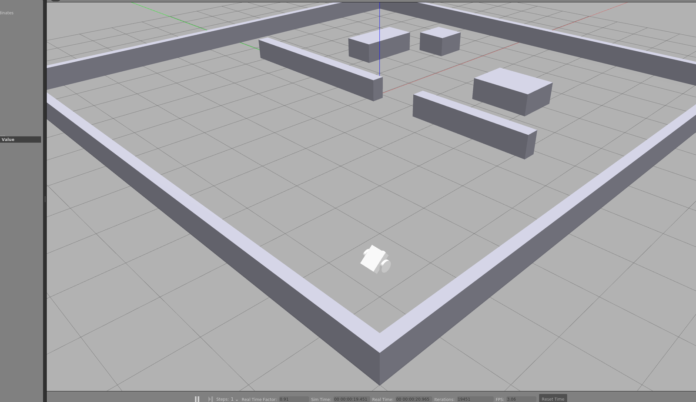
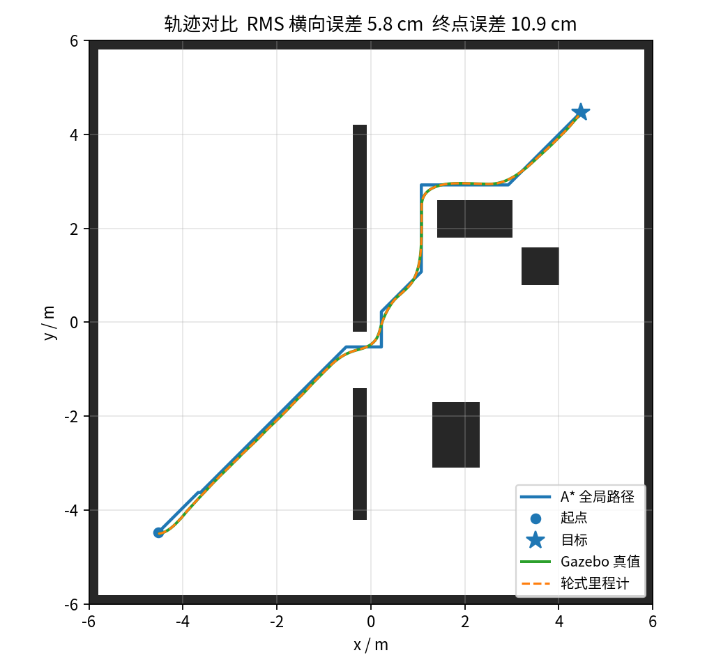
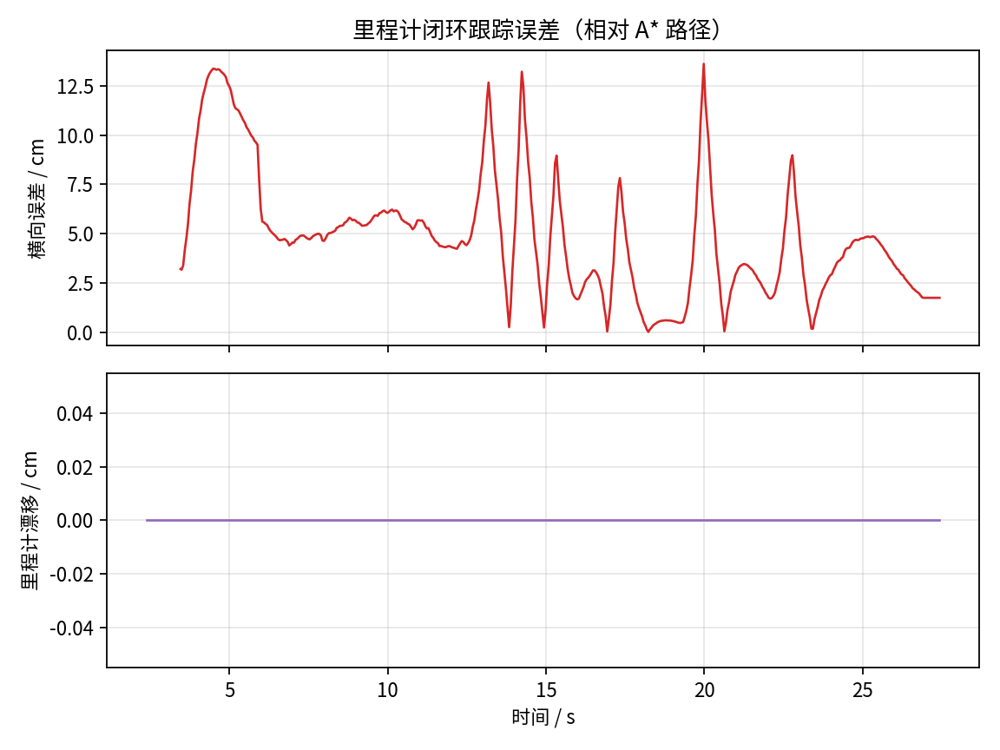
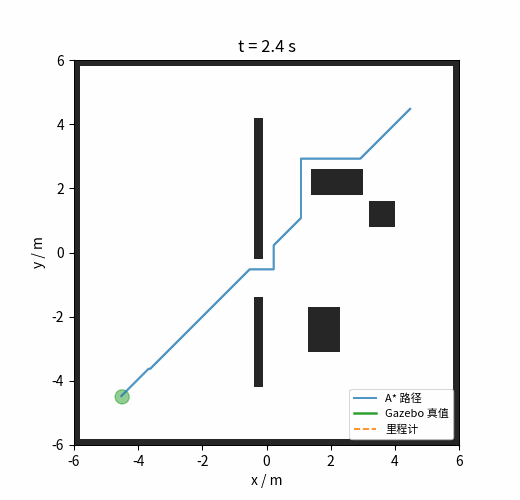

基于里程计反馈与 A* 算法的差速底盘静态全局路径规划
本页对应 src/ground/diff_drive_astar_odom_nav。在 Gazebo 中搭建两轮差速底盘与静态障碍场景：A* 在静态占用栅格上规划全局路径，纯追踪控制器仅用轮式里程计 /odom 反馈跟踪，Gazebo 真值 /ground_truth 只用于事后评估。
数据来源
本页所有数字来自 Ubuntu 22.04 + ROS 2 Humble + Gazebo Classic 11 的虚拟机实跑（无显示器，gzserver 无界面模式），运行命令见 §4。同一命令重跑会有小幅波动。
与仓库已有的 ros2_pure_pursuit 相比，本模块不重复纯追踪控制本身，而是补上静态全局规划与 Gazebo 差速底盘闭环，并给出真实运行数据：
| 对比项 | ros2_pure_pursuit |
本模块 |
|---|---|---|
| 全局规划 | 无（路径由外部给定） | 0.05 m 栅格 A* |
| 机器人模型 | 离线运动学 / 简化 ROS 2 节点 | Gazebo 物理差速底盘 |
| 规划起点 | — | /odom 轮式里程计实时位姿 |
| 路径执行 | 纯追踪闭环 | 纯追踪闭环（30 Hz） |
| 评价数据 | 跟踪误差 | 真值轨迹、横向误差、里程计漂移、速度指令 |
1. 本模块实际实现范围
| 要求 | 实际情况 |
|---|---|
| 差速底盘模型 | 做了。URDF 两驱动轮 + 低摩擦万向球，gazebo_ros_diff_drive 编码器里程计 |
| 静态全局路径规划 | 做了。0.05 m 栅格 A*（8 邻接、严格穿角、机器人半径膨胀） |
| 里程计反馈控制 | 做了。30 Hz 纯追踪，只用 /odom；不使用真值 |
| 动态障碍/局部避障 | 不做。场景与地图均为静态 |
| SLAM/建图 | 不做。地图由场景几何离线生成，规划与仿真严格对齐 |
2. 运行环境
| 组件 | 版本（实测） |
|---|---|
| 系统 | Ubuntu 22.04 LTS（虚拟机，无 GPU/显示器） |
| ROS | ROS 2 Humble |
| 仿真 | Gazebo Classic 11（gzserver 无界面） |
| Python / numpy | 3.10 / 1.26 |
| 其他 | PyYAML、matplotlib、Pillow（画图与 GIF） |
3. 场景与地图
geometry.py 是唯一几何来源，同一份矩形列表同时生成：
worlds/static_obstacles.world：12 m × 12 m 房间、中间隔墙（1.2 m 门洞）与 4 个箱子；maps/static_map.pgm：240 × 240、分辨率 0.05 m 的占用栅格。
起点 (-4.5, -4.5)，目标 (4.5, 4.5)，二者被隔墙分开，A* 必须从门洞绕行。
4. 运行步骤
colcon build --packages-select diff_drive_astar_odom_nav
source install/setup.bash
cd src/ground/diff_drive_astar_odom_nav
python3 main.py # 无界面，完整实验 + 自动出图
python3 main.py --gui # 有显示器时查看 Gazebo 画面
标准 launch 方式：
ros2 launch diff_drive_astar_odom_nav main.launch.py
修改场景后重新生成地图与世界（否则地图和仿真会不一致）：
python3 -m diff_drive_astar_odom_nav.geometry .
5. 原理
5.1 A* 全局规划
- 8 邻接，直行代价 1、对角 √2，octile 启发式，
weight=1时最优； - 严格穿角检查，避免路径擦过障碍角；
- 机器人半径 0.22 m + 0.05 m 余量，对障碍做可分离膨胀（与膨胀半径无关的 O(HW) 实现）；
- 起点取
/odom当前位姿；目标落在障碍内时用 BFS 修复到最近空闲格； - 静态全局规划，只规划一次，不随位姿反复重规划。
5.2 里程计反馈纯追踪
每个控制周期（30 Hz）：
- 在路径上找距里程计位姿最近的点，索引单调前进；
- 沿路径前视 0.55 m 得到目标点，；
- 按前视方位角与剩余距离减速，线速度限幅 0.75 m/s，角速度限幅 1.4 rad/s；
- 距终点 0.12 m 内停车。
5.3 指标
| 指标 | 定义 |
|---|---|
| 横向误差 | Gazebo 真值位姿到 A* 折线的最短距离 |
| 终点误差 | 末次真值位姿到路径终点距离 |
| 里程计漂移 | 同一时间戳下 /odom 与 /ground_truth 的位姿差 |
| 规划/行驶长度 | A* 折线长度 / 真值轨迹累加长度 |
6. 真实运行结果
一次完整运行（results/run_01，25.05 s，502 个 20 Hz 采样）：
| 指标 | 实测 |
|---|---|
| 运行状态 | SUCCEEDED |
| 规划路径长度 | 14.23 m |
| 实际行驶长度（真值） | 13.54 m |
| 总耗时 | 25.05 s |
| 终点位置误差 | 10.9 cm |
| 横向误差 RMS / 均值 / 最大 | 5.8 / 4.9 / 13.6 cm |
| 里程计漂移 最终 / RMS | 0.0 / 0.0 cm |
| 最大线速度指令 | 0.75 m/s |
6.1 Gazebo 实际运行画面

上图是在 Gazebo Classic 11 中加载
worlds/static_obstacles.world、生成urdf/diff_robot.urdf后的真实运行画面（含 3D 视口与底部实时状态栏），不是手工绘制的示意图。
6.2 轨迹与误差



关于 0 漂移
Gazebo 的刚性轮地接触是理想模型，编码器里程计积分与真值几乎完全一致，因此漂移为 0；控制回路仍然只读 /odom，真值不参与控制。横向误差主要来自纯追踪对栅格折线拐角的切角，最大 13.6 cm 出现在起步对准与 90° 拐角处。
7. 测试与复现
python3 -m pytest -q test # 17 项：A*、纯追踪、地图/场景一致性
python3 main.py --out results/run_01
一次运行自动产出 trajectory.csv、plan.csv、metrics.json、metrics.md、trajectory.png、error.png、speed.png、trajectory.gif。仓库内 results/run_01 保留 CSV 与指标文件，trajectory.png、error.png、trajectory.gif 只保存在 docs/img/，避免同一二进制重复入库；results/run_01 中数据为真实运行结果，未手工修改。
8. 大模型使用声明
本模块代码与文档在开发过程中使用了 AI 编程助手辅助生成；作者已逐行核对并在 Gazebo 中实际运行验证，提交的实验数据与图表均由真实运行产生。